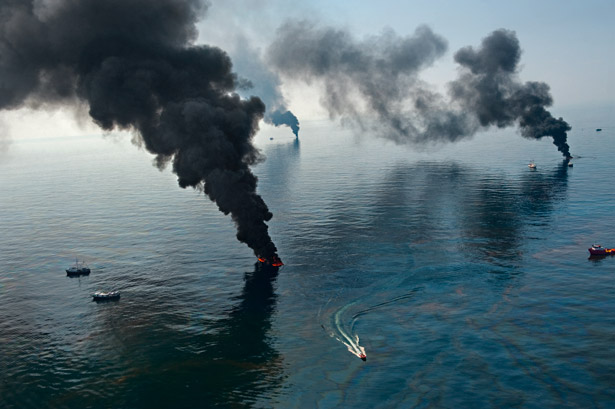
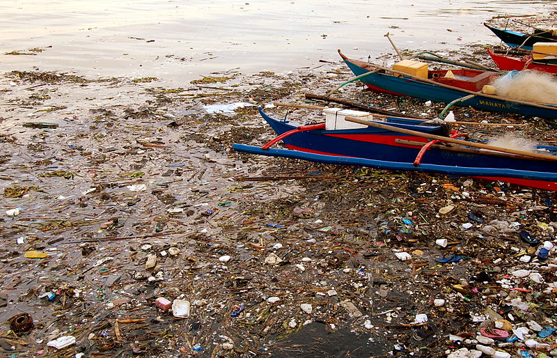

Pollution
Pollution is the introduction of harmful substances entering the natural environment which causes many changes. Pollution can be in the form of energy (noise, heat, or light) or pure substances (also known as chemical substances). Pollutants, the components of pollution, is waste that pollutes air, water, and soil. 9 million people in the world died due to pollution in 2015.

Air Pollution
Any damaging substance that people put into the atomosphere is considered air pollution. These types of substances causes global warming. The main pollutant that warms the Earth is a greenhouse gas called carbon dioxide. Although living things let out carbon dioxide when they breath, it is considered an air pollutant when involved with cars, planes, power plants, and other activities that include the burning of fossil fuels.
Other damaging greenhouse gases are methane—which comes from swamps and livestock—and chlorofluorocarbons (CFCs) which were used in aerosol propellants and refrigerants until they were banned because of their major effect on Earth's ozone layer. One other pollutant is sulfur dioxide. This is related to chemicals that cause acid rain. But sulfur dioxide also reflects sunlight which keeps Earth cool. Volcanic eruptions can emit massive amounts of sulfur dioxide into the atmosphere which leads to cooling that lasts for years. Volcanoes used to be the biggest source of atmospheric sulfur dioxide, but now humans are.

Water Pollution
The contamination of water bodies(e.g. lakes, rivers, oceans, aquifers, and groundwater). This type of pollution occurs when pollutants are directly or indirectly discharged into water without treament to remove the harmful compounds. Water pollution affects a wide range of living things including all plants and organisms living in the water bodies as well as plants and organisms exposed to the water. Not only does water pollution affect individual living species, but also the natural biological communities. It has been suggested that water pollution is the leading worldwide cause of deaths and diseases.
Marine dumping, oil leakage, sewage and waste water, and mining activities are just a few causes of water pollution. The main cause of water pollution is air pollution. Every time that the air gets polluted with sulfur dioxide and nitrogen oxide, they mix with water particles and create and very harmful toxic substances. This makes water contaminated and put animals and water organisms in danger. 
Image by Shubert Ciencia